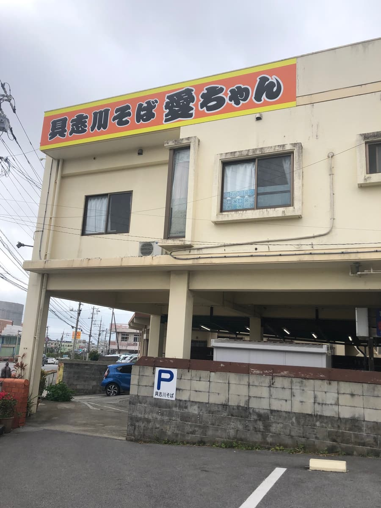
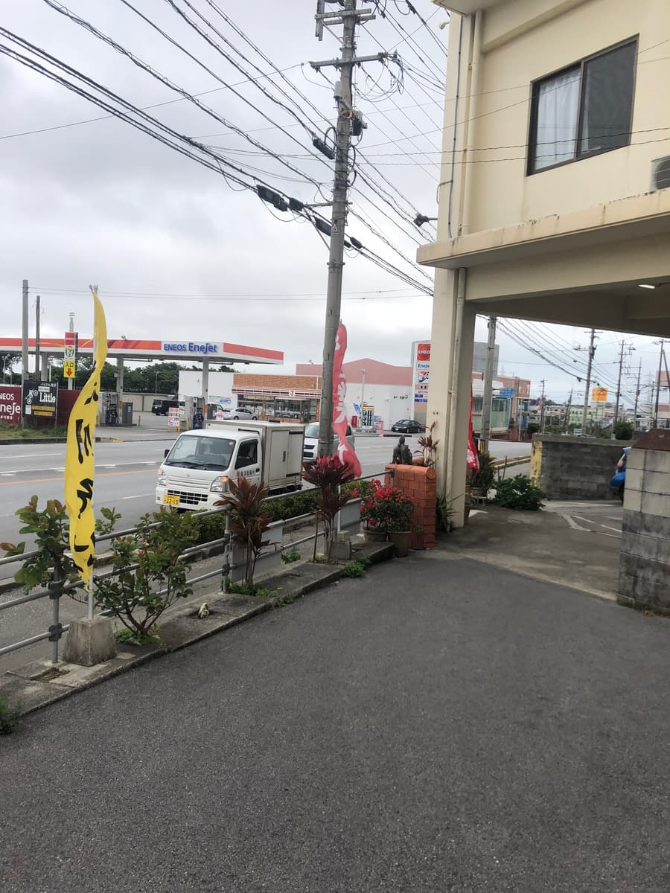
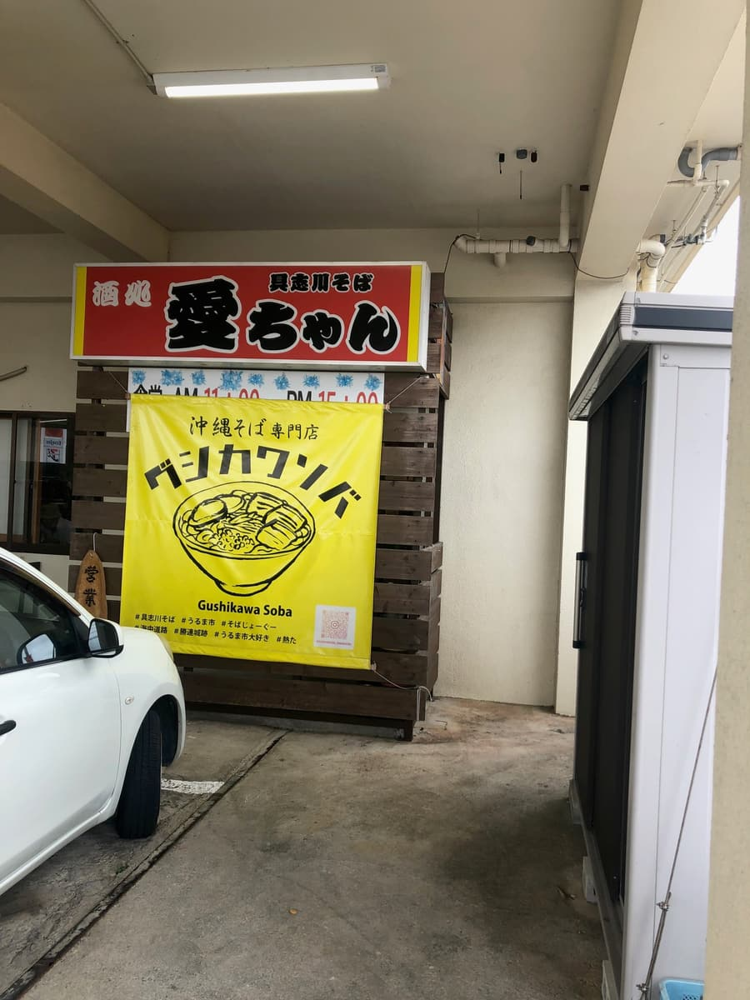
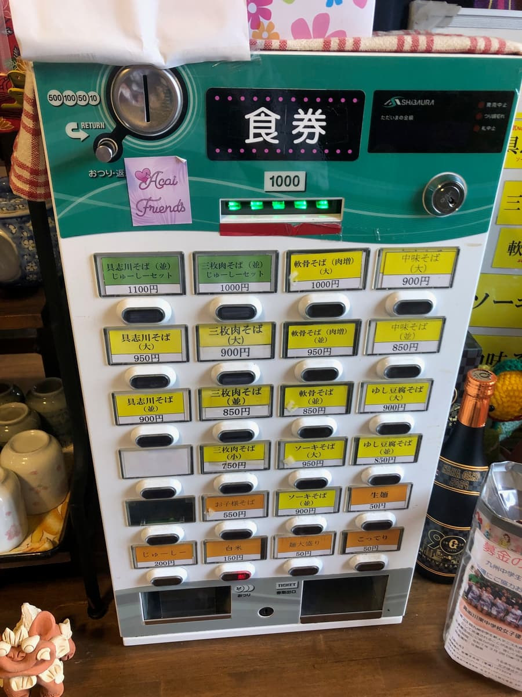
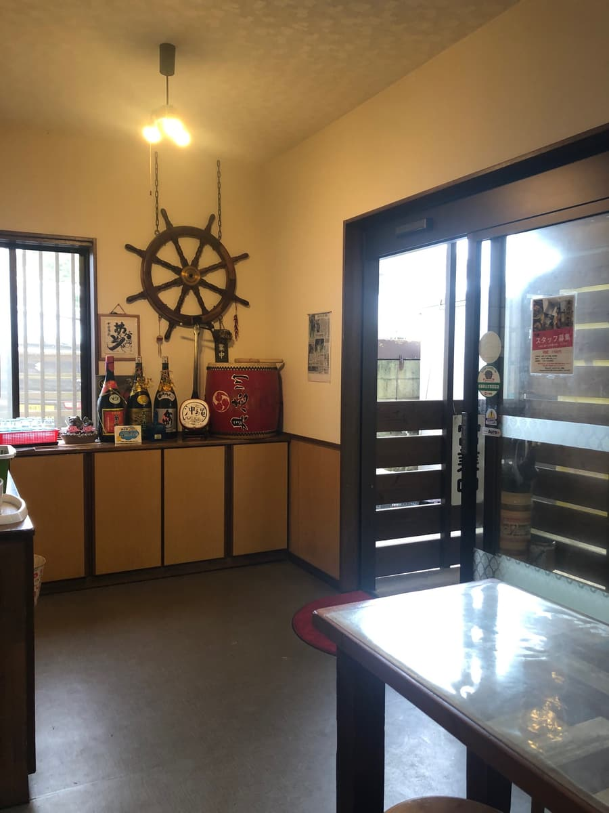
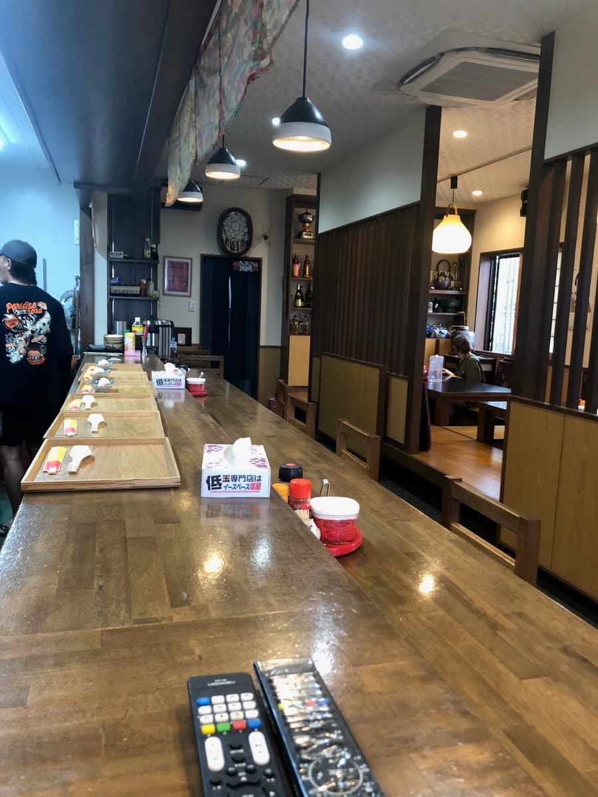
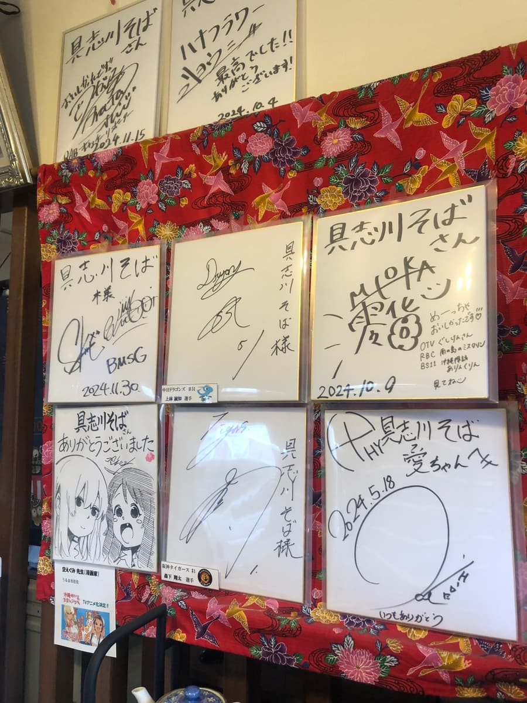
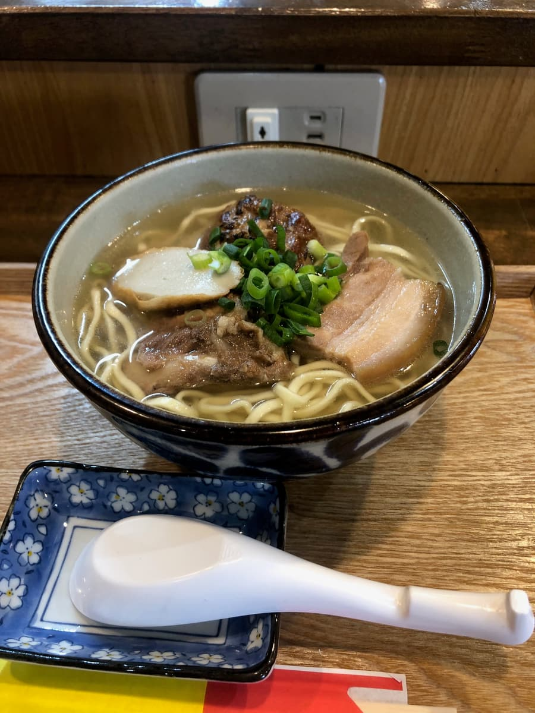
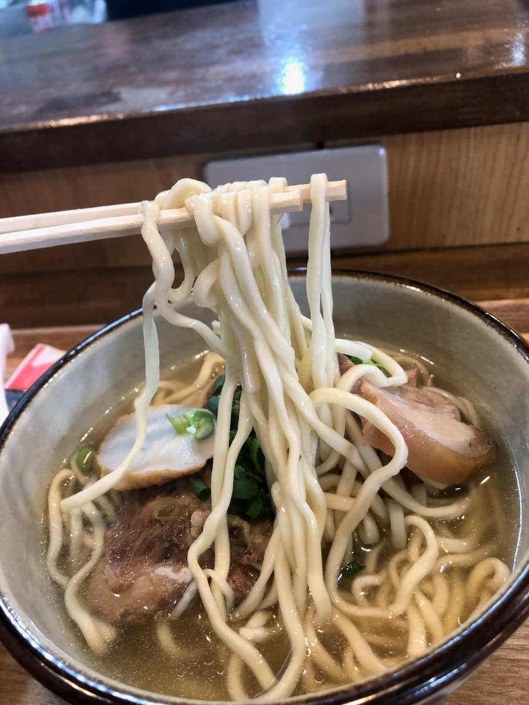

2025.3に食べました😄 今回はうるま市大田にある「具志川そば愛ちゃん」へ行ってきました😊✨



大きな建物の上に赤と黄色の目立つ看板がどーんと出ていて、遠くからでもすぐ分かるお店ですね。道路沿いにあって、向かいにはガソリンスタンドやコンビニも見えるので、車で走っていても見つけやすい場所でした🚗 駐車場も店舗の下や横にあり、入りやすさはなかなか良い感じです。こういう昔ながらの食堂感が残っているお店は、沖縄そば巡りをしているとつい気になってしまいますね。
お店の入口付近には「沖縄そば専門店」と書かれた黄色い大きな幕があり、手描き風のそばのイラストもあって、ローカル感たっぷりでした🌺 看板には「具志川そば 愛ちゃん」と大きく書かれていて、名前からしてなんだか親しみやすいですね。

店内に入ると、まず食券機で購入するスタイルです。具志川そば、三枚肉そば、軟骨そば、中味そば、ゆし豆腐そば、ソーキそばなどが並んでいて、メニューは思ったより豊富でした🍜 今回はその中から「具志川そば 大」を注文しました。
店内はカウンター席、テーブル席、奥には座敷っぽい席もあって、ひとりでも家族でも入りやすい雰囲気ですね😊 木のカウンターは広めで、ゆっくり食べられる感じが良かったです。



壁にはサイン色紙がたくさん飾られていて、いろんな人が訪れているんだなーという空気もありました。沖縄らしい布や泡盛の瓶、太鼓や舵の飾りなどもあり、派手すぎないけどちゃんと沖縄らしさがある店内です🌴 観光向けに作り込まれた感じというより、地元の人が普段から食べに来るような落ち着いたそば屋さんという印象でした。
しばらくして運ばれてきた「具志川そば 大」は、見た目から王道の沖縄そばという感じでした🍜 透明感のあるスープに、三枚肉、軟骨系のお肉、かまぼこ、ネギがのっていて、派手さはないけど安心感のある一杯ですね😋

まずスープをひと口飲んでみると、鰹出汁がしっかり効いていますね。

麺は中細くらいの緩いちぢれ麺で、食感は柔らかめでした🍜 沖縄そばらしい素朴さはありますが、コシをしっかり楽しむタイプというよりは、スルスル食べやすいタイプです。ここは少し柔らかいなーと感じました😅
具材のお肉は、適度な味付けで、甘辛さも強すぎないバランスでした🥩 軟骨系のお肉は少し筋感があり、トロトロに柔らかいというよりは、肉らしい食感が残っているタイプでした。
評価（9点/15点）：全体的に「具志川そば愛ちゃん」の具志川そば大は、すごく個性的で記憶に残る一杯というより、地元で普段使いしやすい普通に美味しい沖縄そばという印象でした🍜✨ 鰹出汁の効いたあっさりスープ、柔らかめの中細ちぢれ麺、適度に味付けされたお肉という組み合わせで、良い意味でクセが少ないですね。個人的には、麺・スープ・具材のどれも大きな不満はないですが、もう一歩「おっ」と思う強さがあるともっと印象に残ったかなと思います😊
麺 ：★★★☆☆（3）
スープ：★★★☆☆（3）
具 ：★★★☆☆（3）